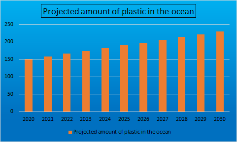

Facts
Plastic is the ocean is an un well-known issue, here are some answers to common questions:
Plastic is the ocean is an un well-known issue, here are some answers to common questions:
You may not know it, but everyone on this earth has caused plastic pollution. Plastic is very strong, easy to get, and cheap. It is always available for us to purchase. Most supermarket products are wrapped in plastic, even fresh fruit and vegetables. This makes it nearly impossible to avoid buying plastic, which shows how big this issue really is. There are always new plastics being created in factories around the world, meaning that there are more plastics that have the potential to go into the ocean and harm ocean life. Plastics that we put in the rubbish bun don't necessarily go straight to the landfill, some of it often blows out of bins, and off trucks. This wind then causes the plastic to float to oceans or rivers that lead into oceans.
Plastics from food packaging, and containers can end up in the ocean Plastics in the ocean may not be a well known issue, but it has major effects on the environment. From sea creatures, to humans, everyone is affected by it, and you may not even know it. Vulnerable wildlife see a piece of colourful plastic, floating in the ocean as a piece of food, and eat it. This not only causes them to choke, but it also accumulates in their stomach. Humans who hunt these animals, will find that their food is contaminated with plastic which makes them susceptible to diseases.
This issue has been happening for a very long time. Before people thought it was an issue, people were littering, and over time the plastics accumulated in the ocean. By the time that people were aware of the issue, there was alread y so much plastics in the ocean, that it could have started decades or even centuries before. It is still an ongoing issue now, and will be for many years to come, so that is why action needs to be taken now. We do not know how much plastic is in the ocean, but there is an estimated 150 Million metric tonnes of it, and 8 million metric tonnes, are added, each year.
Asia is the country that is the cause of most plastics in the ocean. Not only because of it's huge population, but the many rivers that open out into the ocean. Riverside settlements and towns have high chances of getting plastics in the ocean because wind can easily direct the litter into the river, and with river currents, it ends up in the ocean.
The great pacific garbage patch is a build up of plastics in the ocean from gyres. Gyres are circular ocean currents. The Great Pacific Garbage patch is the largest Gyre in the world. “The GPGP covers an estimated surface area of 1.6 million square kilometres, an area twice the size of Texas or three times the size of France.” This is one of the main areas that plastic cleanup organisations focus on as well, because it grows bigger each year.